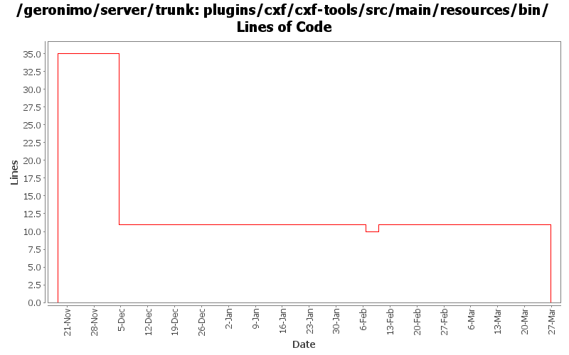

[root]/plugins/cxf/cxf-tools/src/main/resources/bin

| Author | Changes | Lines of Code | Lines per Change |
|---|---|---|---|
| gawor | 8 (100.0%) | 50 (100.0%) | 6.2 |
move files into contents directory
0 lines of code changed in 2 files:
Make sure error code of batch scripts is returned properly. Based on suggestions from Jack Cai (GERONIMO-4525)
1 lines of code changed in 1 file:
use exit /b n to set error code on windows - based on patch from Jack Cai (GERONIMO-4525)
5 lines of code changed in 1 file:
remove GERONIMO_BASE from scripts and pass org.apache.geronimo.home.dir system property instead of org.apache.geronimo.base.dir (GERONIMO-4229)
9 lines of code changed in 2 files:
mostly working plugin that uses CXF tooling to generate WSDL and other artifacts for JAX-WS services (GERONIMO-4351)
35 lines of code changed in 2 files: